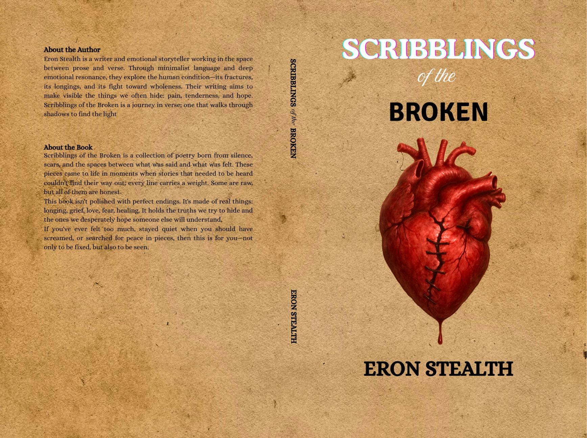

Scribblings of the Broken
by Eron Stealth

This book is dedicated to everyone going through an emotional journey. I hope you find the strength to heal.
To everyone who’s ever found themselves in the dark, unsure of where their next step should fall—this is for you. For those who kept walking anyway, for those who paused to cry, and especially for those who helped others rise—thank you. Your brokenness is not the end of your beauty.
May these scribblings be the echo you needed.
The Journey
The collection moves through four movements:
- Section I: Confusion & Hurt — The beginning: disorientation, emotional rupture, and internal chaos.
- Section II: Longing and Desire — Yearning for connection, romantic vulnerability and emotional exposure.
- Section III: Conflict & Breaking Point — Struggle, realizations, choices, and internal tensions.
- Section IV: Healing & Peace — The resolution: self-acceptance, emotional growth, and inner calm.
Plus bonus pieces exploring sensuality, sacred connections, and poetic aftermath.
From the Collection
CROSSROAD
At a crossroad I now stand,
Trying to decide which way is best,
Which choice is right—
Another error, I can’t afford.
So stationary I remain,
My head rightly aimed,
Pointing me in a direction;
My decision seems made.
Then arose my other persona,
The one I usually shouldn’t consider.
Her tears, too thick and red,
And one too quick, she is to shed.
...
So now I stand,
Hoping for a resolve,
Having both personae,
Yet feeling so lost.
SCARS
The path of the broken or the lonesome
Wasn’t meant for you alone.
Though you travel it now,
Through it, many have also traveled.
You're not the only one
That's feeling hopeless.
You're not the only one
Without a home.
...
We've all got scars.
We all get hurt sometimes.
We all mend up
And find our way home.
Let go of all the emotions
Holding you down.
Let go of all the hurt,
And find your way back.
PURSUIT OF HAPPINESS
I dream of a time
When everything is grand,
When there is no worry,
And there is plenty.
...
See, I'm in the pursuit of happiness,
And I care less about the holes draining,
Or the dark tugging at me;
So I won't lay awake to wallow.
Everything shining ain't gon' be gold,
Yeah, even gold passes through fire.
So I know I'd be fine someday,
And it'll eventually be grand.
Buy on Amazon